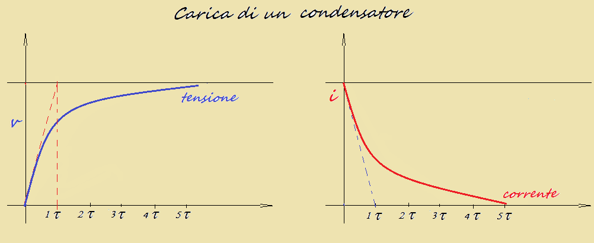
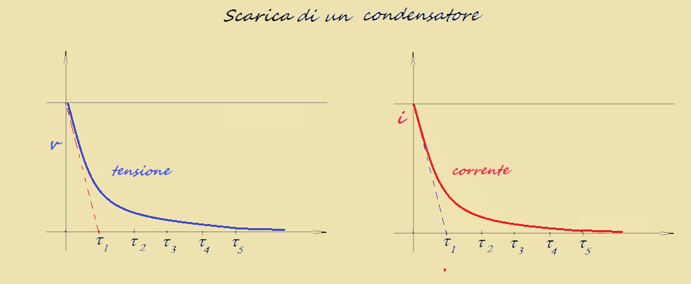

PLS di Elettromagnetismo
Durante l’a.s. 2019/20 ho avuto modo di svolgere un percorso analogo di PLS, sempre presso l’Università di Palermo (Dipartimento di Chimica e Fisica), tenuto dal prof. Claudio Fazio, il cui oggetto principale era lo studio laboratoriale di alcuni fenomeni elettromagnetici. L’obiettivo degli incontri è stato quello di determinare i valori effettivi di determinati strumenti, che si discostano sempre dal valore nominale a causa di errori casuali e sistematici. Questo è stato possibile attraverso una serie di esperimenti ripetuti e trascritti nell’apposito programma di "fitting" LoggerPro. In particolare, abbiamo analizzato il classico circuito RC, per determinare il valore effettivo della capacità del condensatore. Per farlo, abbiamo ripetuto il processo della sua carica e scarica per 3 volte con 6 diversi resistori.
Fase di carica
- La corrente erogata dal generatore fa sì che della carica q si accumuli sulla piastra del condensatore:
q = C x Vs x (1 – e-t/RC) - L’accumulo di carica rende più difficile l’erogazione della corrente: I = (Vs/R) x e-t/RC
- La tensione ai capi del condensatore cresce proporzionalmente all’accumulo di carica, fino a raggiungere (teoricamente a t = ∞, praticamente a t ≥ 5RC) il valore massimo, pari alla tensione fornita dal generatore (Vs): Vc = Vs x (1 – e-t/RC)
- La tensione ai capi del resistore, espressa dalla seconda legge di Kirchhoff (Vr = Vs-Vc), al tendere di Vc a Vs tende a 0, con andamento esponenziale: Vr = Vs x e-t/RC
Fase di scarica
- Durante la fase di scarica, il condensatore si comporta similmente a un generatore di tensione. La tensione ai suoi capi, inizialmente massima, tende a 0: Vc = Vs x e-t/RC
- La tensione ai capi del resistore, espressa tramite la seconda legge di Kirchoff (Vr = Vc), decresce di pari passo con Vc: Vr = Vc = Vs x e-t/RC
- La carica che si era accumulata sulle piastre del condensatore (q = C x Vc), tende a 0 al tendere a 0 di Vc:
q = C x Vs x e-t/RC
- L’intensità di corrente, il cui valore è determinato dalla prima legge di Ohm (I = Vc/R), decresce al tendere a 0 di Vc: I = (Vs x e-t/RC)/R
 